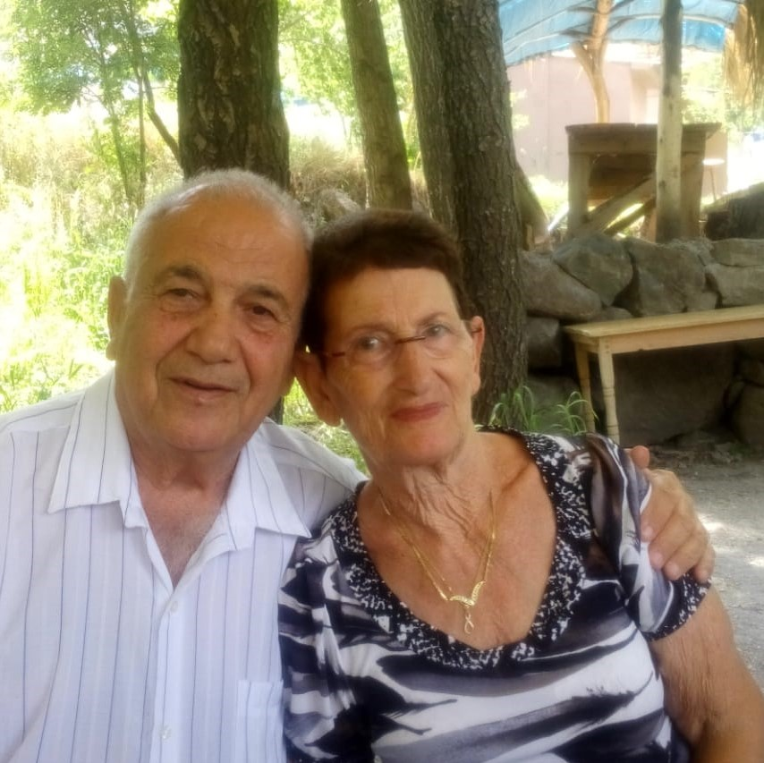
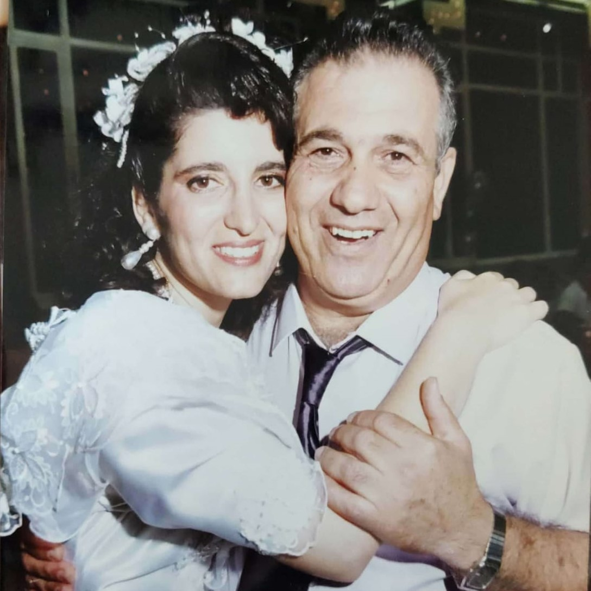
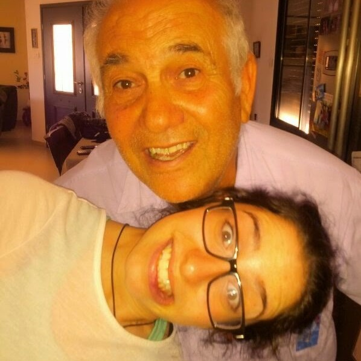
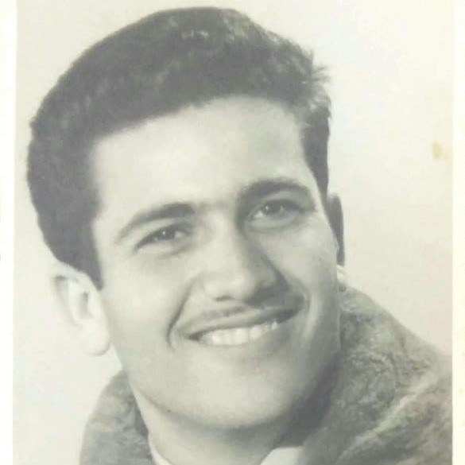
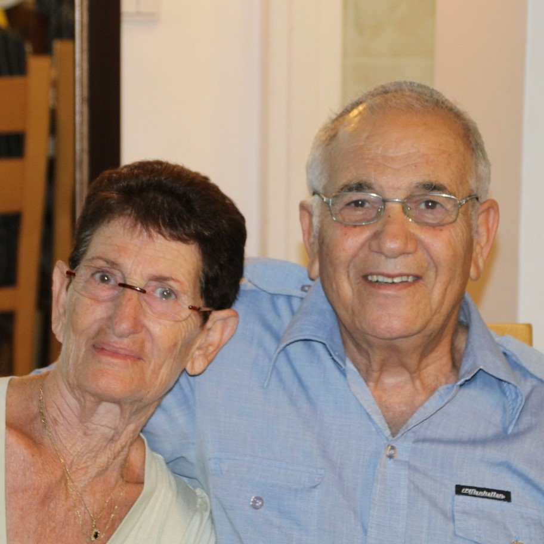
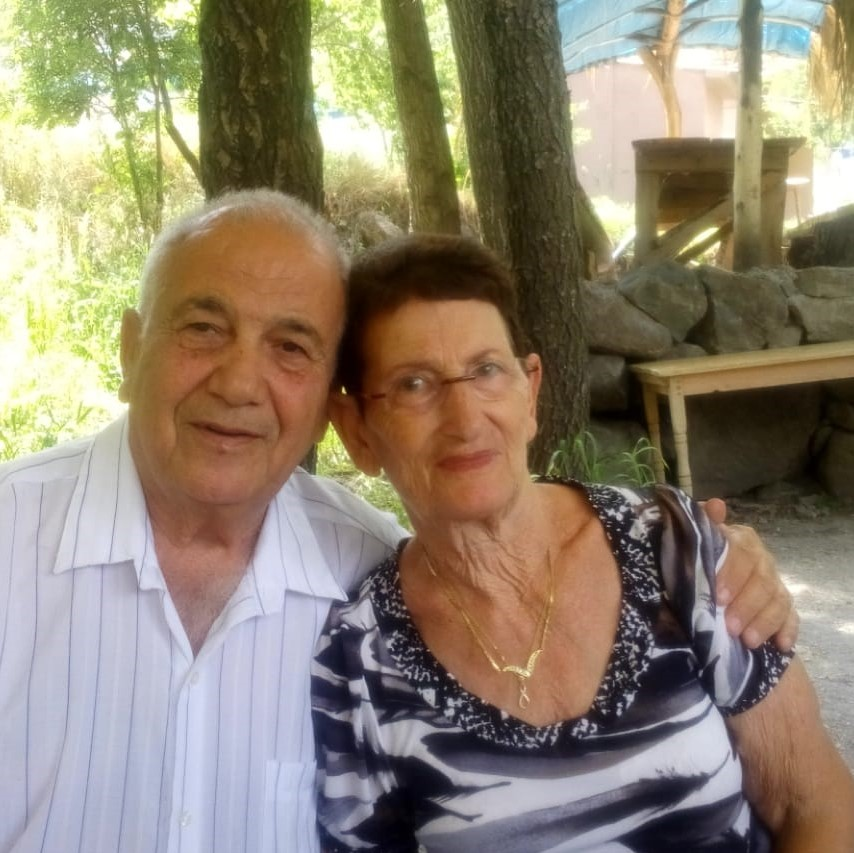
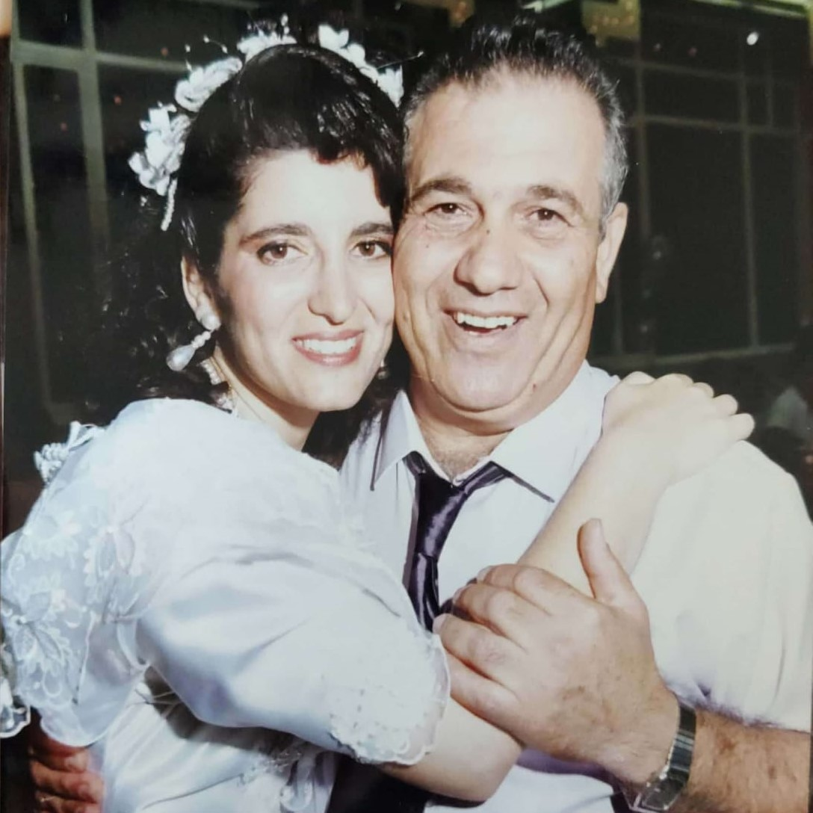
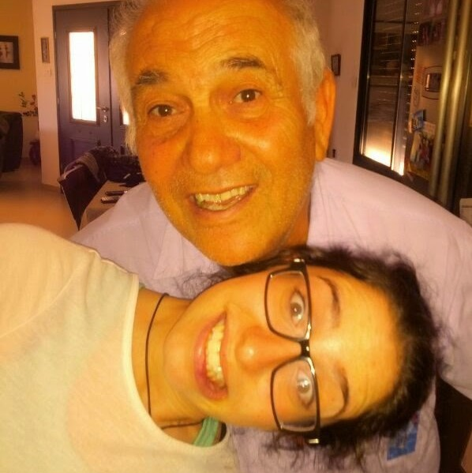
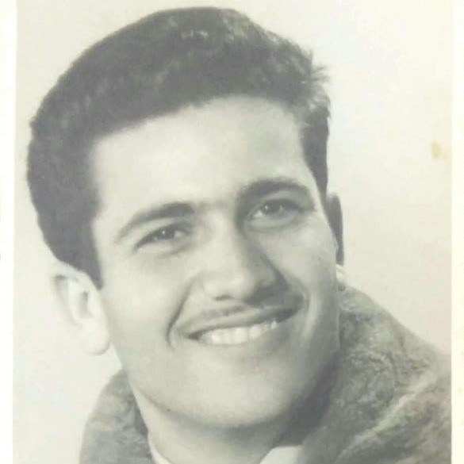
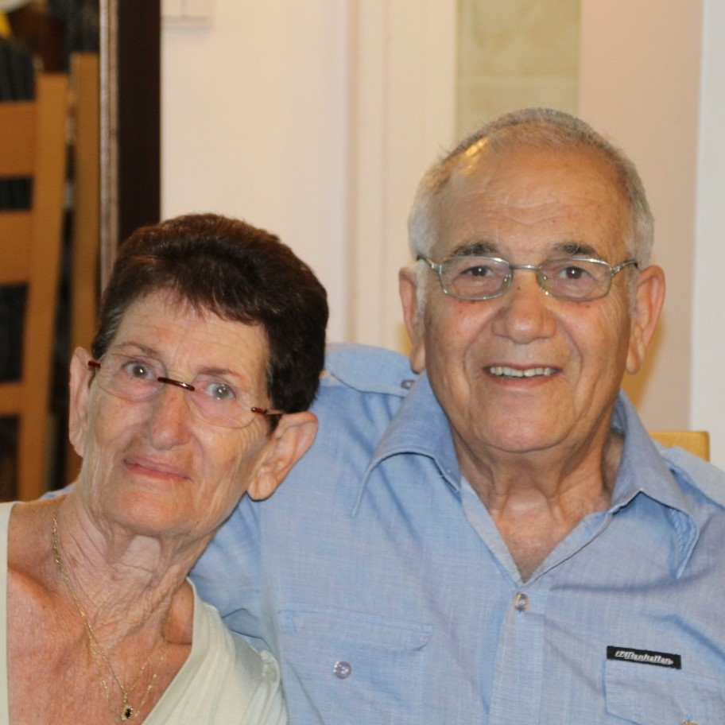

היי, קוראים לי איציק סאיג ואני סבא מאושר ל-15 נכדים!
נולדתי ב?? שבעיראק, ובגיל 10 עליתי לארץ ישראל. גרתי בפתח תקווה עד גיל ?, ואחר כך עברתי ל?.
בגיל ? הכרתי את חנה (ז"ל), והתחתנו אחרי ? שנים. נולדו לנו 4 ילדים מקסימים: איילה, רויטל, אבי ורון. היינו נשואים 50 שנה, ואהבתי אותה המון.
למדתי ב?, ועבדתי במגוון עבודות:
היום אני בפנסיה, מתנדב באגודה למען החייל ונהנה להיות עם הילדים והנכדים שלי.


 








